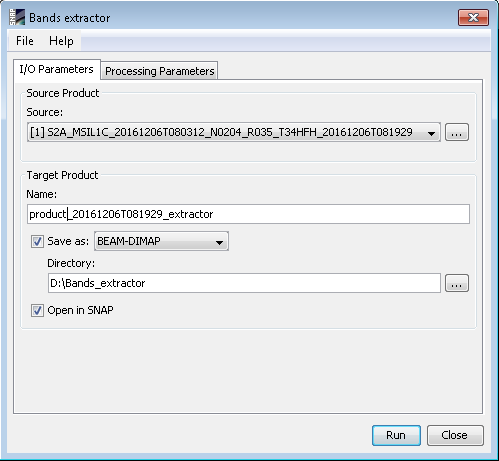
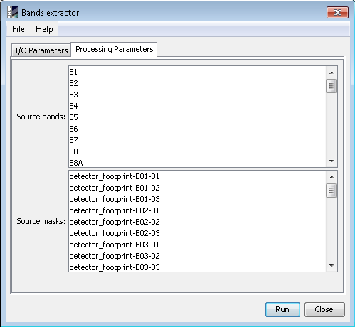

| Bands Extractor Processor | |
The Bands Extractor Processor creates a new product with less bands and masks.
Source ProductSpecify the source product which will be used to copy the bands and masks. Target ProductName: Used to specify the name of the target product.
Save as:
Used to specify whether the target product should be saved to the file system. The
combo box presents a list of file formats.
The text field allows to specify a target directory. Open in SNAP: Used to specify whether the target product should be opened in the Sentinel Toolbox. When the target product is not saved, it is opened in the Sentinel Toolbox automatically. |
 |
|
Source bands: Specify the source bands to copy. Source masks: Specify the source masks to copy. |
 |